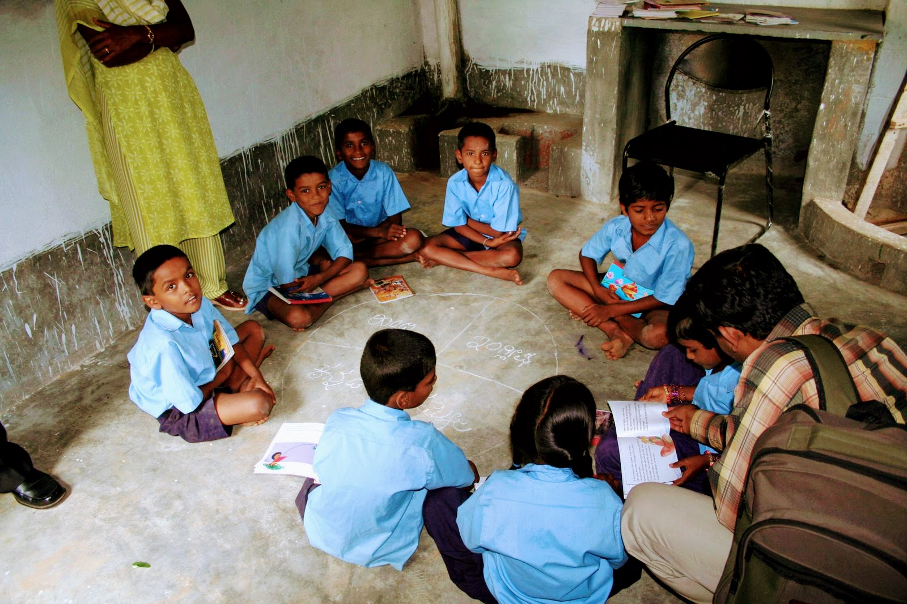
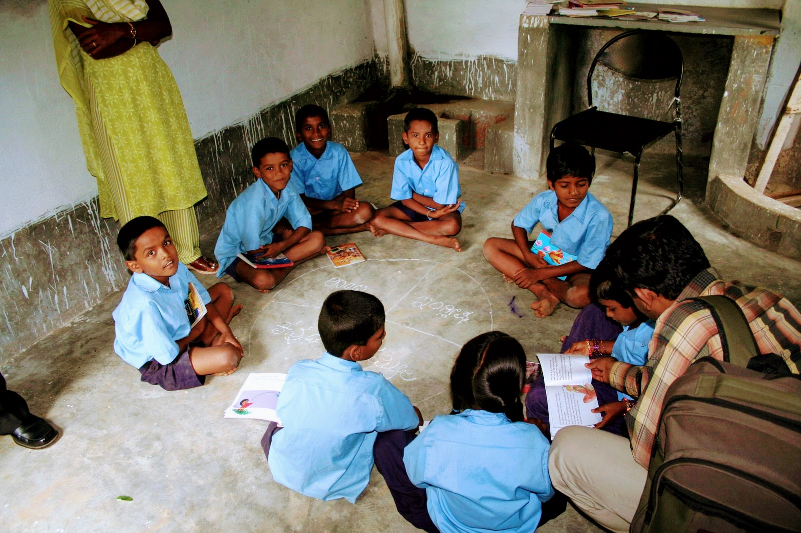

Teaching in Low Resource Environments
Who Helped Us?
Partners
- Department of Public Instruction
- Donors:
- United Way India
- ING Vysya
- Inventure Academy
- 40K Foundation (Sydney, AU)
Volunteers


- ING Vysya

- FIS Global

What Did the Libraries Look Like?
 
 
RPG: Pictures-1


RPG: Pictures-2


RPG Design Method
Step#1: Book Mining

- Read the book aloud!
- Find Characters, Events, Places, Emotions…
- Document these for each Book in a searchable Excel (Horrors!)
RPG Design Method
Step#2: Curriculum Mining

- Curriculum is specified in terms of Minimum Learning Levels (MLLs)
- Each Subject, each class
- Short Crisp phrases or sentences:
- Math in real life
- Simple Bills
- Use Road Signs
- Traffic Rules
RPG Design Method
Step3: Socratic Questions to Start
Questions(3-4) bring a specific aspect of the book into focus
Book Mining shows which aspects to focus on and to develop questions on
Allow one to depart from the specifics of book and go more general
General Ideas can motivate an Activity
- E.g. “The Village Fair” → Things available in a fair → Buy and Sell → Like things unlike things
RPG Design Method
Step4: Create Role-Play-Game
- Book Mining done earlier + Questions created above
- Brainstorming, Word-Association Games
- Clues from Miming and Dumb Charades
- Using modifications of common childhood games
- Google News, You Tube videos
- Public events, News Stories and TV advertisements provide a fertile ground for Activity creation.
- Eg: “Grandpa Fish and the Radio” → methods of communication → TV, Radio, Phone, Post, Telegram, Visual Communication Signs

- Activity was “bought” from Akshara by Karadi Tales…Hah!
RPG Design Method
Step5: Verification: The Right Questions at the End
- Go from General to Specific
- Map the Role Play learnings / concepts back to events and characters in the book
- Socratic Questions(3-4) as to how the role play relates to the book
- E.g “Ruby Red Rose Red”:
- How did Raju share his fruit?
- How did they cut it?
- Which fruit in the book already nicely divided up? ( Fractions activity with Origami)

Sample RPG Document
- Yup it is the one about Rayleigh Scattering!

Lego Activity Pictures